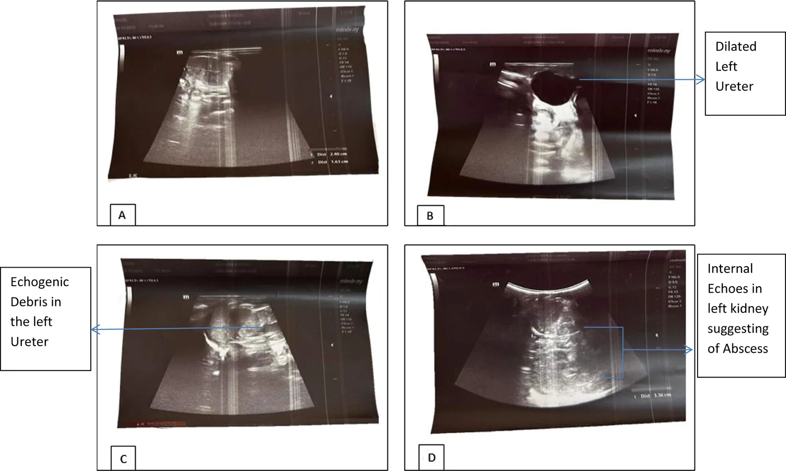
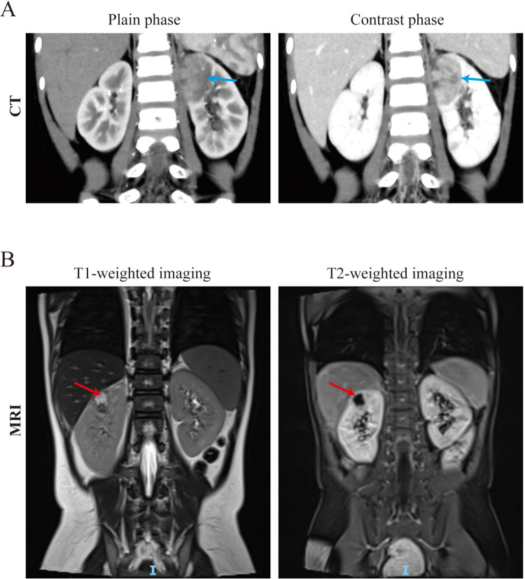

3086 — Nhiễm khuẩn đường niệu liên quan catheter (CAUTI) ở trẻ / Catheter-associated urinary tract infection in children
Tags: pattern:nhiem-trung-tiet-nieu pattern:bacteriuria pattern:device-associated vung:bang-quang vung:than protocol:cay-nuoc-tieu protocol:sieu-am-than-tiet-nieu protocol:CT-bung-chau score:NHSN-SUTI
Mức chắc chắn (certainty): tổng hợp y văn (literature synthesis) — ghép hướng dẫn + 3 chuỗi dữ liệu có PMCID: (a) phác đồ NICU với ngưỡng cấy ≥ 50.000 CFU/mL, 5 ngày kháng sinh, thời điểm siêu âm/VCUG (Magers J et al., J Perinatol 2026, PMC13190328, CC BY 4.0); (b) can thiệp PICU hạ CAUTI từ 3,3 → 0,9/1.000 ngày catheter (Linam M et al., Antimicrob Steward Healthc Epidemiol 2025, PMC11704929, CC BY 4.0); (c) 2 ảnh biến chứng giải phẫu (Adhikari N et al., Ann Med Surg 2026, PMC13354487, CC BY 4.0; bài 12 năm về áp-xe thận nhi, PMC13424581, CC BY 4.0). Ngưỡng theo CDC/NHSN 2024, IDSA 2009, AAP 2011, IDSA 2019 (ASB) — ghi phiên bản, không ghi tên tác giả guideline khi chưa đối chiếu.
Bài này trả lời 4 câu hỏi khi trẻ có catheter niệu bị sốt: (1) Cấy ở đâu và ngưỡng bao nhiêu CFU mới gọi là CAUTI? (2) Vì sao bốn bộ tiêu chuẩn (NHSN, IDSA, AAP, NICU) cho bốn ngưỡng khác nhau — dùng cái nào? (3) Khi nào cần siêu âm/CT, và hình ảnh trả lời câu hỏi gì mà cấy không trả lời được? (4) Khi nào KHÔNG điều trị? Đây là mặt thiết bị – nhiễm khuẩn của đường tiểu nhi; nối 3010 – Hẹp miệng nối niệu quản–bàng quang và 3058 – Xuất huyết mảnh ghép ruột.
1. Tổng quan bệnh học – cơ chế hình ảnh
1.1 Vì sao có catheter là có nguy cơ
- Catheter lưu bỏ qua ba hàng rào: cơ thắt niệu đạo, niêm mạc niệu đạo có IgA và vi khuẩn chí bình thường, và dòng nước tiểu rửa trôi khi đi tiểu tự nhiên. Nước tiểu còn lại trong bàng quang là môi trường nuôi cấy.
- Hai đường lây: (I) nội bào (intraluminal) — vi khuẩn bám thành ống dẫn lưu, trào ngược từ túi dẫn lưu lên bàng quang (đúng cơ chế mà can thiệp ở PICU nhắm vào: bỏ tã + dụng cụ chống trào ngược, PMC11704929); (II) ngoại bào (extraluminal) — màng sinh học (biofilm) hình thành quanh catheter trong niệu đạo, vi khuẩn đi ngược theo khe catheter–niêm mạc.
- Thời gian là yếu tố nguy cơ số một: tại PICU, nguy cơ tăng rõ khi catheter lưu > 3 ngày — chính là lý do đơn vị này chuyển sang đi buồng theo ca cho trẻ có catheter > 3 ngày (PMC11704929). Ở trẻ, các yếu tố cộng thêm: niệu đạo ngắn, bàng quang thần kinh, CAKUT (bể thận ứ nước, trào ngược), dinh dưỡng kém, điều trị kháng sinh rộng trước đó.
- Tần suất nền: nhiễm khuẩn tiểu là nhiễm khuẩn vi khuẩn nặng thường gặp nhất ở nhũ nhi — 4,6–13,6% trẻ có sốt; ở trẻ sinh non/high-risk NICU tới 25% (PMC13190328).
1.2 TẠI SAO hình ảnh KHÔNG chẩn đoán CAUTI — nhưng vẫn bắt buộc phải biết đọc
- Chẩn đoán CAUTI là sự kiện vi sinh – lâm sàng: vi khuẩn trong nước tiểu không tạo tín hiệu trên siêu âm hay CT. Không có "hình ảnh của CAUTI".
- Hình ảnh trả lời ba câu hỏi khác, và chỉ ba câu này mới làm thay đổi điều trị:
- Có tắc nghẽn/ứ nước không? (bể thận giãn, đài thận tù) → ứ mủ (pyonephrosis) là cấp cứu niệu khoa, kháng sinh đơn thuần không đủ.
- Có ổ mủ ngoài lòng bể thận không? (áp-xe thận/quanh thận) → cần dẫn lưu, không chỉ kháng sinh.
- Có khí trong thành bàng quang không? (viêm bàng quang khí thũng — rất hiếm ở trẻ, gặp ở đái tháo đường/suy giảm miễn dịch) → nguy cơ thủng bàng quang, cần CT.
- TẠI SAO thấy được trên siêu âm: nước tiểu bình thường là dịch đồng nhất, trống âm; khi có mủ – tế bào – mảnh tổ chức, trong lòng bể thận xuất hiện echo bên trong (internal echoes) và mảnh tăng âm lơ lửng (echogenic debris) — đó là dấu hiệu pyonephrosis, không phải "sỏi". Áp-xe là ổ dịch có vỏ — trên CT vỏ ngấm thuốc, trung tâm không ngấm, trên MRI T2 sáng, DWI hạn chế khuếch tán, ngấm viền.
- TẠI SAO phải phân biệt với ứ nước đơn thuần: ứ nước không nhiễm thì dịch trống âm, thành bể thận mỏng đều, không sốt; ứ nước nhiễm thì echo trong lòng, thành dày, sốt cao, CRP tăng — cùng hình dạng, khác nội dung.
1.3 Số liệu nền (bắt buộc thuộc)
- CAUTI ở PICU: 0,5/1.000 ngày catheter (2017–2019) → 3,3 (2019–2021) → 0,9 sau can thiệp; khoảng cách trung bình giữa hai CAUTI 349 → 88 → 200 ngày, dài nhất 573 ngày (PMC11704929).
- Ngưỡng cấy theo bộ tiêu chuẩn:
- CDC/NHSN (giám sát): catheter phải lưu > 2 ngày lịch (ngày đặt = ngày 1) và còn/đã rút trong ngày xảy ra biến cố; cấy ≥ 10⁵ CFU/mL, ≤ 2 loài, kèm ≥ 1 triệu chứng.
- IDSA 2009 (điều trị): cấy ≥ 10³ CFU/mL một loài + triệu chứng, ở bệnh nhân đang có catheter hoặc vừa rút < 48 giờ.
- AAP 2011 (trẻ 2–24 tháng có sốt): cần có mủ (pyuria) + cấy ≥ 50.000 CFU/mL từ mẫu catheter; mẫu chọc trên xương mu ngưỡng thấp hơn hẳn (mọi mọc một loài).
- Phác đồ NICU 2026: ≥ 50.000 CFU/mL (catheter hoặc chọc trên xương mu), có hay không có pyuria; ≥ 10.000 CFU/mL kèm pyuria vẫn điều trị; đa loài = nhiễm bẩn trừ khi lặp lại và có một loài đạt ngưỡng (PMC13190328).
- Điều trị: 5 ngày cho UTI không nhiễm khuẩn huyết, time-out ngày 5 để quyết định kéo lên 7 ngày; 90% trẻ đạt ≤ 6 ngày, 1% tái phát cùng loài trong 7 ngày (PMC13190328).
- Vì sao ngưỡng khác nhau: NHSN cần độ đặc hiệu cao để so sánh giữa các bệnh viện (nên 10⁵); IDSA điều trị cá thể nên hạ xuống 10³ để không bỏ sót; AAP thêm pyuria vì trẻ nhỏ dễ nhiễm bẩn mẫu; NICU dùng 5 × 10⁴ vì mẫu catheter ở trẻ sơ sinh rất dễ nhiễm bẩn. Ngưỡng không phải chân lý — là đánh đổi độ nhạy/đặc hiệu.
2. Mẫu hình + chẩn đoán phân biệt theo vị trí (Gamut)
- Theo vị trí: bàng quang (viêm bàng quang — đau dưới rốn, đái máu, không sốt cao) → thận (viêm thận–bể thận cấp — sốt cao, đau hông lưng, CRP tăng) → quanh thận (áp-xe quanh thận, liệt ruột) → toàn thân (nhiễm khuẩn huyết, ABUTI khi cấy máu cùng loài với nước tiểu).
- Theo bối cảnh: sốt trong 48 giờ đầu sau đặt catheter → nghĩ nguyên nhân khác hoặc nhiễm khi đặt; sốt sau 3–7 ngày → CAUTI/ứ mủ; sốt dai dẳng sau khi đã dùng kháng sinh đúng → ổ mủ hoặc tắc nghẽn, phải chụp.
- Gợi nhớ CATHETER: Cystitis (viêm bàng quang) · Abscess (áp-xe thận/quanh thận) · Tắc nghẽn (pyonephrosis, van niệu đạo sau) · Hematogenous (nhiễm khuẩn huyết) · Emphysematous (khí thũng) · Tumor/nang (bóng catheter giả khối) · Extra-urinary (VAP, CLABSI, ổ mổ) · Residual (bí tiểu tồn dư do catheter tắc).
3. Bảng so sánh phân biệt (ma trận đối chiếu)
| Thực thể (entity) | Hình ảnh điển hình | Chốt vào (rule-in) | Chốt loại (rule-out) | Gợi ý xác nhận |
|---|---|---|---|---|
| CAUTI (nhiễm khuẩn tiểu có triệu chứng) | Siêu âm/CT bình thường hoặc chỉ dày thành bàng quang nhẹ; không có ổ mủ | Triệu chứng + cấy đạt ngưỡng của bộ tiêu chuẩn đang dùng + không có nguồn khác | Cấy < 10³ CFU/mL và không pyuria → không phải CAUTI | Cấy từ cổng lấy mẫu, trước kháng sinh; rút/đổi catheter |
| Bacteriuria không triệu chứng (ASB) | Hình ảnh bình thường; không có phản ứng viêm | Cấy dương + KHÔNG triệu chứng + không pyuria | Có sốt/đau hông lưng → không phải ASB đơn thuần | Không cấy tầm soát; nếu đã cấy dương: không điều trị (IDSA 2019) trừ thai/phẫu thuật niệu có tổn thương niêm mạc |
| Ứ mủ bể thận (pyonephrosis) | Siêu âm: bể thận giãn + echo bên trong, mảnh lơ lửng, thành dày; CT: mức dịch–mủ, dày thành bể thận, thâm nhiễm quanh thận | Sốt cao + ứ nước + echo trong lòng bể thận | Bể thận giãn nhưng dịch trống âm, không sốt → ứ nước đơn thuần | Siêu âm cấp tại giường; CT nếu cần; dẫn lưu (nephrostomy/stent) là điều trị quyết định |
| Áp-xe thận / quanh thận | CT: ổ dịch vỏ ngấm thuốc, trung tâm không ngấm, có thể khí; MRI: T2 sáng + DWI hạn chế, ngấm viền | Ổ dịch có vỏ trong nhu mô/quanh thận + sốt kéo dài | Chỉ thâm nhiễm lan tỏa không ổ dịch → viêm thận cấp, kháng sinh đơn thuần | CT có cản quang; MRI nếu cần; dẫn lưu ổ ≥ 3 cm hoặc không đáp ứng 48–72 giờ |
| Viêm bàng quang khí thũng | CT: khí trong thành bàng quang ("chuỗi hạt"), có thể khí trong lòng | Khí trong thành bàng quang trên CT | Khí trong lòng ống dẫn lưu (do thủ thuật) → không phải khí thũng | CT bụng–chậu; kiểm tra đái tháo đường/suy giảm miễn dịch (hiếm ở trẻ) |
| Sốt không do đường tiểu | Ổ nhiễm ngoài tiết niệu: đông đặc phổi, ổ cạnh cột sống, catheter trung tâm, vết mổ | Có ổ nhiễm ngoài tiết niệu + cấy nước tiểu âm/không pyuria | Cấy nước tiểu đạt ngưỡng + pyuria → không loại CAUTI | X-quang/CT ngực, siêu âm ổ mô mềm, cấy máu |

Bốn mặt cắt: (A, B) thận và niệu quản trái giãn; (C, D) echo bên trong và mảnh tăng âm lơ lửng trong bể thận/niệu quản — mủ, không phải sỏi; gợi ý áp-xe/ứ mủ. Đây là biến chứng phải loại trừ khi trẻ có catheter bị sốt dai dẳng. Nguồn: Ann Med Surg 2026, PMC13354487, CC BY 4.0.4. Protocol: lấy mẫu – ngưỡng – điều trị – khi nào chụp
4.1 Lấy mẫu (sai ở bước này làm sai toàn bộ chẩn đoán)
- Không bao giờ cấy nước tiểu từ túi dẫn lưu — túi là nơi vi khuẩn mọc tự do; mẫu từ túi gần như luôn dương tính giả.
- Lấy qua cổng lấy mẫu (sampling port) của ống dẫn lưu: sát khuẩn bằng cồn 70%, đợi ≥ 30 giây, hút bằng kim/ống tiêm vô khuẩn (quy trình của APSIC 2023).
- Nếu catheter đã lưu > 2 tuần (IDSA 2009): rút và đặt catheter mới, lấy mẫu từ catheter mới — vì biofilm trên catheter cũ làm mẫu luôn dương tính và không phản ánh bàng quang.
- Cấy TRƯỚC kháng sinh; kèm tổng phân tích nước tiểu (pyuria: ≥ 5 BC/HPF hoặc ≥ 10 BC/mm³ nước tiểu không ly tâm — theo bảng phác đồ NICU 2026).
- Nếu rút catheter được: lấy nước tiểu giữa dòng sau khi rút — ít nhiễm bẩn hơn mẫu từ catheter lưu lâu.
4.2 Bảng ngưỡng theo bộ tiêu chuẩn (dùng đúng bộ của mình, ghi vào hồ sơ)
| Bộ tiêu chuẩn | Đối tượng | Ngưỡng cấy | Điều kiện kèm |
|---|---|---|---|
| CDC/NHSN 2024 (giám sát) | Mọi lứa tuổi, có catheter > 2 ngày lịch | ≥ 10⁵ CFU/mL, ≤ 2 loài | ≥ 1 triệu chứng; trẻ ≤ 1 tuổi: sốt > 38°C, hạ nhiệt < 36°C, cơn ngưng thở, nhịp tim chậm, li bì |
| IDSA 2009 (điều trị) | Người lớn và trẻ có catheter hoặc rút < 48 giờ | ≥ 10³ CFU/mL một loài | Triệu chứng phù hợp, không có nguồn khác |
| AAP 2011 | Trẻ 2–24 tháng có sốt | ≥ 50.000 CFU/mL (mẫu catheter) | Bắt buộc có pyuria; chọc trên xương mu: ngưỡng thấp hơn hẳn |
| Phác đồ NICU 2026 | Sơ sinh/sinh non | ≥ 50.000 CFU/mL (catheter hoặc chọc) | ≥ 10.000 + pyuria cũng điều trị; đa loài = nhiễm bẩn |
4.3 Điều trị (ngắn, vì đây là bài hình ảnh)
- Rút/đổi catheter là can thiệp hiệu quả nhất — không rút thì tỷ lệ thất bại và tái phát cao; đổi catheter cũng cải thiện triệu chứng nhanh hơn đơn thuần kháng sinh.
- 5 ngày nếu không nhiễm khuẩn huyết, time-out ngày 5; kéo 7 ngày khi đáp ứng chậm, dị dạng đường tiểu, hoặc vi khuẩn đa kháng (PMC13190328).
- Không cấy kiểm tra sau khi hết sốt nếu đáp ứng tốt; cấy lại khi không cải thiện sau 48–72 giờ (lúc đó phải chụp để tìm ổ mủ/tắc nghẽn).
4.4 Khi nào chụp gì
- Siêu âm thận – bàng quang (RUS): chỉ định trong đợt điều trị ở trẻ có UTI sốt (AAP 2011; phác đồ NICU cũng đặt RUS trong đợt — PMC13190328); bắt buộc sớm nếu sốt > 48–72 giờ không cải thiện, nghi tắc nghẽn, tiền sử CAKUT/van niệu đạo sau, hoặc sờ thấy bàng quang căng.
- CT bụng–chậu có cản quang: nghi áp-xe thận/quanh thận, khí thũng, hoặc siêu âm không trả lời được; ở trẻ cân nhắc liều (ALARA) — ưu tiên siêu âm + MRI nếu có.
- VCUG: không làm thường quy sau UTI sốt đầu tiên; theo phác đồ NICU: sau UTI thứ 2 hoặc khi RUS bất thường (giãn > độ II, sẹo, nghi trào ngược cao độ) — PMC13190328.
- DMSA: đánh giá sẹo thận, làm sau 4–6 tháng (không trong đợt cấp vì phù nhu mô giả sẹo).
flowchart TD
A[Trẻ có catheter niệu bị sốt] --> B[Khám tìm nguồn khác: phổi, catheter trung tâm, vết mổ]
B --> C[Lấy nước tiểu qua cổng, trước kháng sinh; nếu catheter trên 2 tuần thì thay catheter rồi lấy]
C --> D{Pyuria và cấy đạt ngưỡng theo bộ tiêu chuẩn đang dùng?}
D -->|Không| E[Không phải CAUTI: tìm nguồn khác; không điều trị bacteriuria không triệu chứng]
D -->|Có| F[Rút hoặc đổi catheter + kháng sinh theo cấy]
F --> G{Đáp ứng trong 48 đến 72 giờ?}
G -->|Có| H[5 ngày, time-out ngày 5; không cấy kiểm tra]
G -->|Không| I[Siêu âm thận bàng quang cấp]
I --> J{Có ứ nước, echo trong bể thận, hoặc ổ dịch?}
J -->|Có ứ mủ| K[Dẫn lưu niệu quản hoặc chọc dẫn lưu; niệu khoa]
J -->|Nghi áp xe| L[CT có cản quang; dẫn lưu ổ dịch nếu lớn hơn 3 cm hoặc không đáp ứng]
J -->|Không| M[Xem lại chẩn đoán và kháng sinh; tìm ổ nhiễm ngoài tiết niệu]
5. Biến thể bình thường và cạm bẫy
- Biến thể bình thường: bóng catheter trong bàng quang — vòng tăng âm kèm bóng lưng, di chuyển khi bơm/rút nước, không có tưới máu → không phải khối u; bể thận giãn nhẹ khi bàng quang rất căng (hết khi thông tiểu) → đừng gọi là hẹp khúc nối.
- Cạm bẫy 1 — điều trị bacteriuria không triệu chứng: IDSA 2019 khuyến cáo không tầm soát, không điều trị ASB (trừ thai kỳ và phẫu thuật niệu có tổn thương niêm mạc); điều trị chỉ tạo kháng thuốc và loạn khuẩn, không cải thiện kết cục.
- Cạm bẫy 2 — cấy từ túi dẫn lưu: gần như luôn dương → CAUTI "giả" và kháng sinh vô ích.
- Cạm bẫy 3 — pyuria = nhiễm khuẩn: pyuria chỉ là phản ứng viêm, có thể do catheter cọ sát, sỏi, thuốc; thiếu cấy đạt ngưỡng + triệu chứng thì không phải CAUTI.
- Cạm bẫy 4 — không rút catheter: kháng sinh đơn thuần trên catheter cũ (biofilm) thất bại; đây là lỗi thường gặp nhất khi "sốt mãi không hết".
- Cạm bẫy 5 — siêu âm bình thường thì loại trừ viêm thận: viêm thận–bể thận cấp thường không thấy gì trên siêu âm; siêu âm bình thường không loại trừ nhiễm nhu mô.
- Cạm bẫy 6 — bỏ sót tắc nghẽn: trẻ có van niệu đạo sau, hẹp khúc nối, bàng quang thần kinh — sốt + bàng quang căng + creatinin tăng = siêu âm ngay, không chờ hết kháng sinh.
- Cạm bẫy 7 — candiduria: nấm trong nước tiểu ở trẻ có catheter thường là cột mốc (colonization); chỉ điều trị khi có triệu chứng, thủ thuật niệu, hoặc giảm bạch cầu hạt — không điều trị theo "cấy dương".
6. Tự lượng giá — Blind Quiz
Ca 1 — Sơ sinh có catheter niệu, sốt, bụng chướng; siêu âm thận trái.
- Gợi ý lâm sàng: sốt cao, bạch cầu tăng, không đáp ứng kháng sinh sau 48 giờ.
- Câu hỏi: (1) Mô tả bất thường trong lòng bể thận/niệu quản. (2) Vì sao đây không phải ứ nước đơn thuần? (3) Bước điều trị quyết định là gì?
Bấm để hiện đáp án (findings + chẩn đoán)
- Findings: thận trái ứ nước, niệu quản trái giãn; trong lòng có echo bên trong và mảnh tăng âm lơ lửng (mủ/mảnh tổ chức), thành bể thận dày.
- Chẩn đoán: ứ mủ bể thận (pyonephrosis) trên nền tắc nghẽn — biến chứng của nhiễm khuẩn tiểu trên đường tiểu tắc nghẽn, không phải "nhiễm khuẩn tiểu đơn thuần".
- Vì sao không phải ứ nước đơn thuần: dịch ứ nước trống âm; ở đây có echo/debris + sốt + không đáp ứng kháng sinh = mủ.
- Điều trị quyết định: dẫn lưu (đặt ống thông niệu quản hoặc chọc dẫn lưu qua da) + kháng sinh; kháng sinh đơn thuần không đủ.
- Nguồn: Ann Med Surg 2026, PMC13354487, CC BY 4.0 (ảnh nguyên bản).
Ca 2 — Trẻ 8 tuổi, catheter niệu 10 ngày vì bàng quang thần kinh, sốt 39°C kéo dài; CT bụng–chậu có cản quang.

- Gợi ý lâm sàng: đau hông lưng, CRP tăng; đã dùng kháng sinh 5 ngày không đỡ.
- Câu hỏi: (1) Tổn thương ở đâu và bản chất là gì? (2) Dấu hiệu nào trên CT/MRI chốt "ổ mủ" thay vì "viêm lan tỏa"? (3) Khi nào phải dẫn lưu?
Bấm để hiện đáp án (findings + chẩn đoán)
- Findings: (A) CT thì thường và thì có cản quang — ổ giảm đậm độ trong nhu mô thận có vỏ ngấm thuốc, trung tâm không ngấm; (B) MRI — ổ T1 tối, T2 sáng, ngấm viền, hạn chế khuếch tán.
- Chẩn đoán: áp-xe thận (biến chứng của viêm thận–bể thận cấp, hay gặp hơn khi có tắc nghẽn/thiết bị).
- Chốt "ổ mủ": vỏ ngấm thuốc + trung tâm không ngấm + hạn chế khuếch tán; viêm lan tỏa chỉ thâm nhiễm không ổ dịch.
- Dẫn lưu: ổ ≥ 3 cm hoặc không đáp ứng kháng sinh 48–72 giờ; kèm rút/đổi catheter và giải quyết tắc nghẽn nếu có.
- Nguồn: PMC13424581, Pediatric renal abscess 2026, CC BY 4.0 (ảnh nguyên bản).
Bài liên quan chéo
- 600 – Tổng quan Nhi khoa
- 3009 – Đo bàng quang ruột sau tăng dung tích bàng quang
- 3010 – Hẹp miệng nối niệu quản–bàng quang ở trẻ
- 3011 – Biến chứng niệu quản sau ghép thận
- 3058 – Xuất huyết mảnh ghép ruột sau tăng dung tích bàng quang
- 1721 – Nhiễm khuẩn stent niệu quản (biofilm trên thiết bị — cùng cơ chế)
- 691 – Soi bàng quang và soi quanh catheter ở trẻ
Ảnh
images/3086_cauti_SA-than_PMC13354487.jpg— siêu âm thận sơ sinh: ứ mủ bể thận + niệu quản giãn — Ann Med Surg 2026, PMC13354487, CC BY 4.0.images/3086_cauti_CT-apxe-than_PMC13424581.jpg— CT/MRI áp-xe thận ở trẻ — PMC13424581 (2026), CC BY 4.0.- Chi tiết nguồn + giấy phép:
images/CREDITS.md.
Không dùng để chẩn đoán độc lập khi chưa có người hướng dẫn.